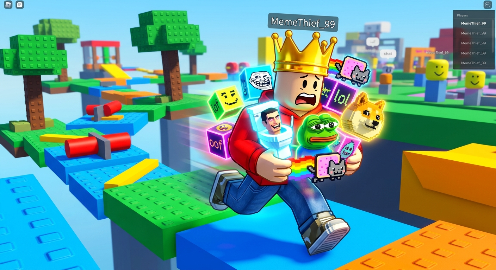

Guia Proficional
venham aprender passo a passo como ser o rei do "Roube Um Brainrot"
Vitor Guarienti

dicas proficionais de um especialista sobre como roubar todos os brainrots das crianças e se tornar o rei do jogo.

venham aprender passo a passo como ser o rei do "Roube Um Brainrot"
Vitor Guarienti